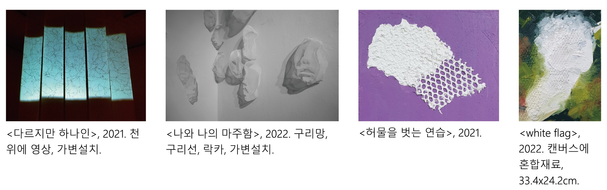
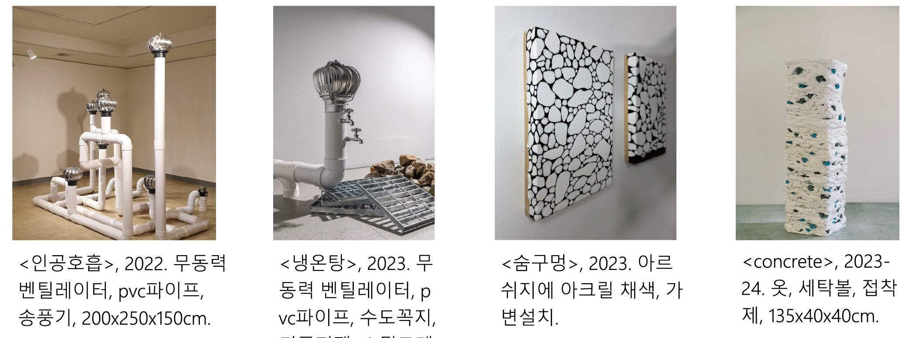
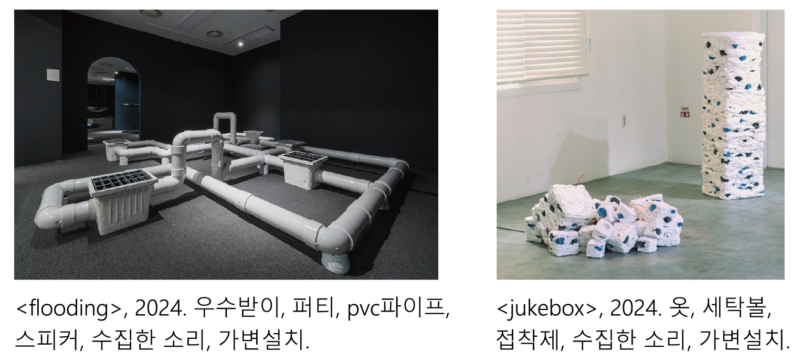
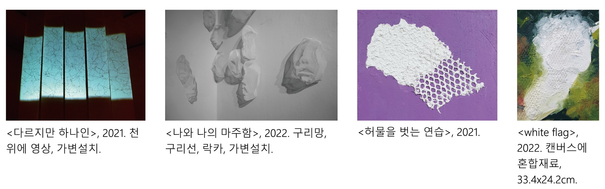
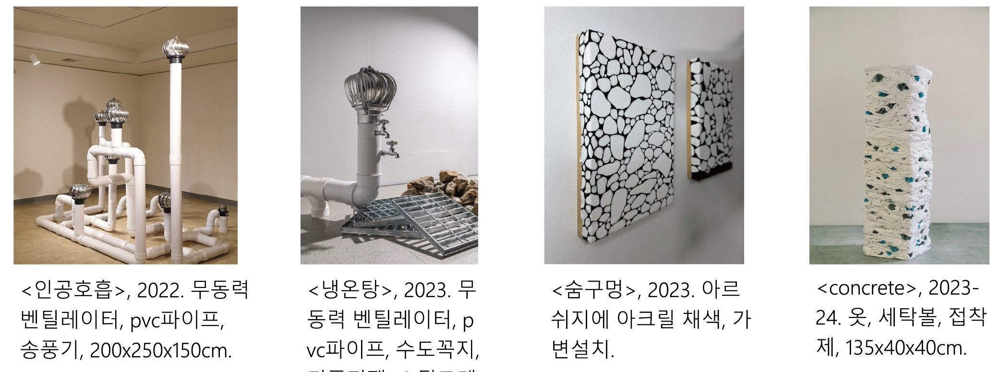
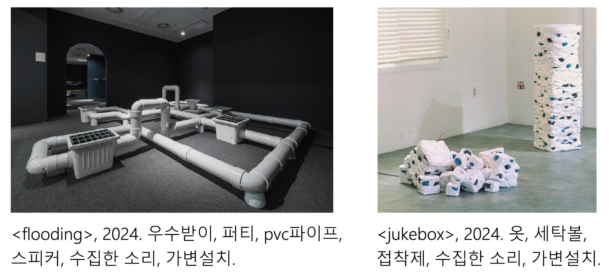

「껍질과 균열」 - 김세로 《우리는 서로의 껍질도 알지 못한다》
장소: 홍티예술촌 2층 전시실
주최/주관: 홍티예술촌
작가: 김세로
마주하는 표면조차 알 수 없다면, 타인을 이해하는 일은 가능한가. ‘껍질’은 외부와 내부를 구분하는 경계이자, 존재를 형성하는 얇은 막이다. 스크린 위에 투사된 빛이 이미지를 재생하듯, 타인의 시선은 ‘나(주체)’의 껍질 위에 상을 만든다. 나는 그 시선에 반응하듯 또 다른 껍질을 덧입고 주어진 역할을 수행한다. 동시에 나의 시선도 타인에게 위치와 의미를 부여한다. 물리적 외피뿐 아니라, 단체나 규범 같은 비가시적 질서 또한 껍질의 형태를 띤다. 이 껍질들은 견고해 보이지만 언제나 틈을 품고 있다. 세계는 껍질의 중첩이자 그 사이에 난 틈으로 이루어진 구조다. 김세로는 관계를 구성하는 구조와 미세한 간극을 탐구한다.
그의 작업은 삶의 방식과 개인적 변화에 맞닿아 있다. 비밀스러운 방식의 자기 고백이자 수많은 껍질을 더듬는 과정이다. 사회 구조 속 개인의 문제에서 출발한 작업은 점차 균열을 따라 주변 세계로 뻗어나가고 있다. 세포가 생성되고 껍질이 벗겨지며 존재가 자신을 재구성하듯, 김세로의 작업도 조정과 변형을 거듭해왔다. 이는 작업 간 단절이 아니라, 사유의 확장이다. 그간의 전시에서 과거 작업을 신작과 병치하거나, 새로운 문맥 속에서 다시 호출하는 방식이 나타났다. 이처럼 그는 질문을 미완의 상태로 남겨두고 시간이 지난 뒤 다시 응답하여 세계를 점차 확장해 간다. 작업 초기에는 인간관계 속 주체와 타자 문제에서 출발했으나, 이후 관계를 구성하는 구조와 틈, 더 나아가 비가시적 존재들로까지 관심이 확장된다. 이 변화에 따라 2021년부터 2024년까지 작업을 얼굴(2021-2022), 숨구멍(2022-2023), 낮은 곳(2024) 세 범주로 나눌 수 있다.
얼굴(2021-2022): 허물과 역할
김세로의 초기 작업은 사회 안에서 인간이 수행하는 역할(페르소나)에 대한 탐구에서 출발한다. <다르지만 하나인>(2021)은 교차하듯 엮인 얼굴 드로잉을 천에 빔 프로젝터로 투사하여 한 사람 안에 공존하는 여러 정체성을 시각화했다. <나와 나의 마주함>(2022)에서는 구리망과 석고 붕대로 수많은 얼굴을 제작했다. 작품명뿐 아니라 작가 노트에서도 사회적 자아에 대한 탐구가 확인된다.
“사회라는 틀 안에 만들어진 작은 단위의 사회에서 타인과 끊임없이 접촉하고, 그들과 연결된 여러 집단을 만든다.”, “페르소나들은 모두 다르지만 한 인간 속에 존재한다는 연결고리로 인해 유기적이다.”, “가면의 존재를 인지하고 고찰함으로써 잠재되어 있던 얼굴이 드러나며 ‘나와 나의 마주함’이 일어난다”(작가노트).
작업 시작점에서 김세로는 사회 속 개인에 대한 고찰을 중심으로 작업을 전개했다. 여러 집단에서 생겨났던 자신의 다양한 모습을 인식하고 받아들이는 과정으로 보인다. 동시에 <허물을 벗는 연습>(2021)과 <white flag>(2022)에서는 자기 성찰에 기반한 허물에 대한 인식이 드러난다. <허물을 벗는 연습>은 타인의 시선으로 만든 외피를 벗어보려는 시도로 보인다. 약 4년간 다닌 직장을 떠나 작업을 시작했다. 자신을 이해하려는 욕망이자 새로운 길에 대한 기대였을 것이다. <white flag>는 타자의 시선에 의한 심리적 반응을 뱀 껍질이라는 이미지로 치환했다. 이 초기 단계에서 김세로는 칼 융의 페르소나 개념을 빌려 진정한 나를 찾아보고자 하였다. 그러나 다양한 얼굴을 한 주체 안에서 수용하는 과정에서 관심은 라캉적 타자와 욕망 문제로 이동한다. 이후 단계에서는 관계 사이에 필요한 “숨구멍”에 집중하며, 허물에 대한 관심은 저류에 남아 작동한다.
숨구멍(2022-2023): 우리 사이 거리
주로 벤틸레이터, pcv 파이프, 돌, 천 등의 재료를 사용했다. 관계 속 틈에 집중하여 물체 사이를 오가는 바람의 물성을 탐구하였다. >인공호흡>(2022)과 <냉온탕>(2023)에서는 공기 순환을 위한 도구인 무동력 벤틸레이터를 사용했다. 작가는 타자를 잡을 수도, 통제할 수도 없는 바람과 같다고 보았다. 타자에 대한 환상과 통제 욕구는 관계가 가까워질수록 커진다. 그리스 신화에서 오르페우스가 사랑하는 에우리디케를 하계에서 이승으로 데려오던 중 뒤를 돌아보는 순간 연인은 다시 어둠 속으로 사라진다. 이처럼 욕망의 대상인 타자는 발견하고자 하는 순간 상실된다. 김세로의 작업은 이해할 수 없는 타자와 어떻게 관계할 수 있을지에 대한 질문이다.
질문에 대한 답은 자연석과 천을 사용한 <숨구멍>(2023) <concrete>(2023-24)에서 나타난다. 작가는 제주 돌담을 보고 바람이 오가는 틈을 관계 유지를 위한 거리로 생각했다. <숨구멍>에서는 쌓인 돌을 제외한 공간과 틈을 검정 물감으로 칠했다. 공백의 자리가 까맣게 위로 올라오며 빽빽하게 쌓인 돌은 배경으로 물러났다. 틈은 서로를 숨 쉬게 하는 적절한 거리다. 불가해한 타자 그 자체를 인정한 채 적절한 거리를 유지하여 균형을 유지해 보려는 태도다. 하지만 작가는 관계 자체에 충돌이 수반함을 받아들인다. <concrete> 속 세탁볼은 약간의 이질감을 느끼게 하며, 꼬이고 겹친 천들은 충돌과 긴장을 품고 있다. 초기 작업이 나에 대한 인식이었다면, 이 시기 작업은 인간의 유한성과 불완전함을 인정하고 타자 존중으로 확장하는 과정이다.
낮은 곳(2024): 수집과 발화
이 시기에는 사회적 중심에서 밀려난, 눈에 보이지 않지만 분명 존재하는 대상에 관심을 둔다. PVC 파이프와 우수받이를 사용한 <flooding>(2024)으로 도시 저 아래 감춰진 우수관을 불러왔다. 이후 <concrete>의 재출현과 함께 <jukebox>(2024)가 나타났다. 기존 작업보다 작고 해체된 형태이다. 수직 구조에서 바람과 물이 가진 흐르는 특성을 따라 수평적 구조로 전환된 듯하다. 유기적 관계와 낮은 위치에 가지는 관심이다. 작가가 이곳저곳에서 수집한 소리를 작품 내에 담기 시작하는데, 자신이 감각한 세상을 모아 작품으로 발화하는 방식으로 보인다.
홍티예술촌 2025년 입주작가 릴레이 개인전 《우리는 서로의 껍질도 알지 못한다》 오후 8:05 2026-01-09
2024년 홍티예술촌 레지던시에 입주하며 매체 확장과 구조의 변화가 생겨났다. 이 변화는 2025년 《우리는 서로의 껍질도 알지 못한다》에서 더 선명히 드러난다. 작업 초기 탐구한 허물이 껍질로 다시 나타난다. 전시장 입구의 검정 커튼을 열고 내부로 들어서면, 다소 어두웠던 외부와 대비되며 하얀 공간과 밝은 빛이 눈에 들어온다. 연신 울리는 불안정한 신호음과 그림자가 공간을 채운다. 입구 우측 캔버스 두 점 <route>(2023), <route_2>(2024)가 시선을 끈다. 검붉은 배경은 마음 깊숙이 알 수 없는 어딘가의 풍경 같다. 모래로 만들어진 선들은 캔버스 저 안에서 나타나고 사라지는 듯 혹은 무언가 지나간 상흔처럼 보이기도 한다. 선의 경로는 어디서부터 시작된 것인지 어디로 흘러가는지 알 수 없다. 1년 후 제작한 <route_2>는 비교적 정리된 형태다. 반짝이는 모래가 캔버스를 세로로 길게 가로지른다. 마치 상처 위 딱지가 올라온 것 같은, 표면 아래 무언가를 암시하는 느낌을 주기도 한다. 확실한 것은 방황하듯 흩어져있던 형상이 <route_2>에서 약간의 방향성을 가진 듯 응집되었다는 점이다. 김세로는 과거에 던진 질문을 이어받고 다시 모호한 질문의 형태로 남긴다. 완결되지 않은 이야기는 보는 이에게 그리고 훗날의 자신에게 전해진다.
<내유외강>의 그림자는 공간을 부유하고 채운다. 조밀하게 엮인 케이블타이는 접근을 경계하듯 뾰족한 끄트머리를 사방에 세우며 내부의 공을 감춘다. 위로 향했던 시선은 그림자와 소리를 따라 아래로 향한다. >청사진>은 모래로 만든 지도나 도면처럼 바닥 위에 펼쳐져 있다. 모래 담 사이를 잇는 가느다란 길은 무언가 안쪽에서 지나가고 있는 상상을 부른다. 두 개의 큰 봉우리 구멍 안쪽에서 소리가 흘러나온다. 모래 담은 서로 신호를 주고받는 듯하지만, 신호는 결국 해석되지 않은 채 미끄러진다. 구멍 외부로 올라온 신호는 끝없이 의미를 지연시킨다. 언어로 표현할 수 없는 무언가, 전하고 싶어도 결국에는 온전히 발신되지 않는 감각이 여기 있다.
이처럼 김세로는 “오해와 해석으로 구성된”, “각자가 지닌 감각의 밀실과 그 사이에 놓은 지각의 틈, 그리고 이해 불가능성의 지형에 주목한”(작업 노트) 관계의 지형도를 그려냈다. 가벽으로 나뉜 안쪽 공간에 들어서면 단채널 영상 <silent agreement>가 보인다. 초록색, 노란색, 파란색이 파동처럼 일렁인다. 빔프로젝터는 관람자의 몸에 영상을 씌우고, 가려진 빛은 그림자로 변해 틈을 생성한다. 파동과 깨진 픽셀 사이로 바람에 흔들리는 숲, 움직이는 물결과 파도 등이 중첩되어 나타난다. 우리는 내부로 들어가지 않는 이상 물이 얼마나 깊은지, 그 안에 무엇이 살아가는지 알 수 없다. 단지 표면을 바라보거나 스크린이 될 뿐이다. 김세로는 전시의 메타포가 개미였음을 밝혔다. 그는 영상 속에 개미 떼가 숨어있으며, 개미의 겹눈으로 바라본 세상을 상상했다고 말했다. 하지만 영상 속 풍경들은 인간이 원거리에서 바라본 모습이다. 작가는 아주 낮은 자리에 놓인 개미의 위치성에 주목한 것으로 보인다. 어쩌면 군집에서 뚝 떨어져 나온 개미 한 마리일지도 모른다.
필자와의 인터뷰에서 작가는 홍티예술촌 주차장 블럭 사이 개미집을 보고 어린 시절 개미 관찰을 떠올렸다고 말했다. 그가 보여준 사진에는 1~2mm 남짓한 작은 개미집 입구 구멍과 개미가 던져놓은 흙 알갱이들이 보였다. 그간 김세로가 관심을 가져온 소외된 사물들과 같이 개미도 존재하지만, 주의를 기울여야 볼 수 있는 존재다. 그의 관심은 도시 아래 우수관에서 더 낮은 위치로 이동했다. 땅의 껍질 아래 있는 무수한 구조의 개미집과 관계들에 주목하여 전시 시작점에 놓은 것이다. 또한 그는 군집 생활을 하는 개미를 인간과 비슷하게 보았다고 말했다. 그러나 의사소통 방식에서는 인간의 언어적 소통과 개미의 비언어적 소통 방식에 확연한 차이를 두었다. 이러한 생각은 이번 전시에서 <청사진>과 <silent agreement>에 반영되었다고 보인다.
전시는 침묵을 공백이자 대화의 일부로 끌어들였다. 입 밖으로 나오지 않은 말은 또 다른 방식의 발화이자 응답이다. 점차 수직적 구조가 해체되고, 소리·그림자·영상 같은 비물리적 요소가 공간을 점유하며 서로를 연결한다. 이전까지 ‘틈’은 불가해한 타자를 인정함과 동시에 적절한 관계를 위한 간격이었다. 이번 전시에서 드러난 균열은 새로운 가능성이 자라날 여지를 남긴다. 김세로의 작업은 질문을 다시 질문으로 이어가기에 하나의 결론으로 닫히지 않는다. 그는 언어가 닿지 않는 틈을 응시하며, 변화의 흐름 속에서 자신의 길을 만들어가고 있다. ●